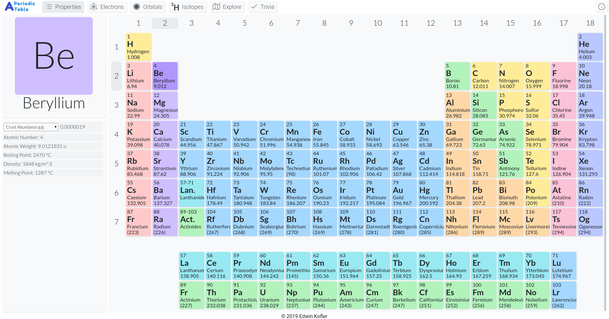
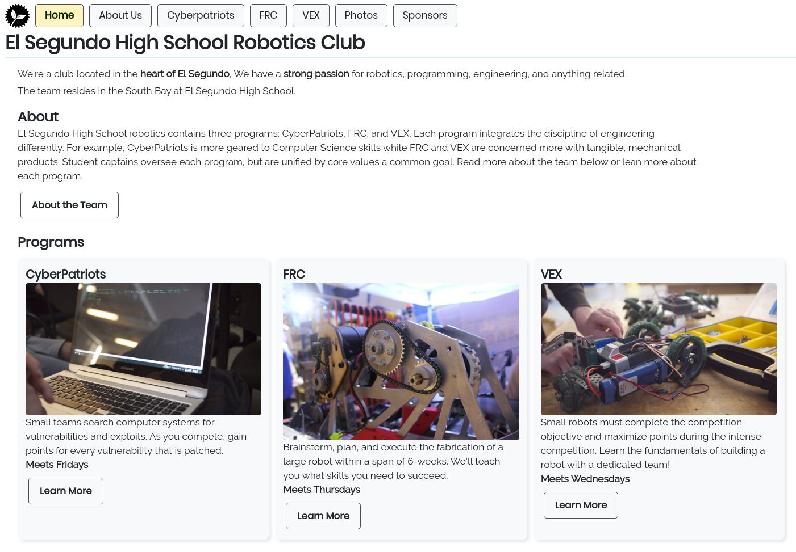

Basalt
A fully-featured package manager for Bash, among other shells. I gave a lightning talk for it at PackagingCon 2021, showing features such as local and global projects, support for actual Bash libraries, and more! Along with Basalt, I have written numerous never-seen-before Bash libraries like bash-object (nested data structures in Bash). See see the full ecosystem here.
autoenv
I currently maintain autoenv, a solution for constructing directory-based shell environments. As a pure-shell alternative to direnv, this project is used by thousands for ensuring certain directory-dependent environment variables, functions, etc. are dynamically available.
Interactive Periodic Table
Interactively displays the periodic table of the elements! Choose which data to display and graphically show relationships among characteristics of various atomic properties in an intuitive interface. The app is available at
chemtable.app.

Robotics Team Website
I built my high school robotics club's website, originally for a
website-building competition. It's a single page application built
with Vue, located at
competition.eshspotatoes.com.
